GoStation, also known as "Battery Swapping Station", mainly provides Gogoro scooter owners with energy exchange services. In addition to Taiwan, Gogoro has been expanding to other countries. I was responsible for the design of the functions and operations on the GoStation interface.
The design scope includes the planning of information structure and user flows, and will also run usability testing if verification is needed. The visual interface is extended with the concept of design guideline. If there are new 3D material requirements, a professional team will be asked to cooperate with the output.
In this product, the items I was responsible for were:
Modularize Information Templates
Welcome Section Optimization
Abnormal Battery Issue Reporting
Role
Product Designer
Team
1 PM, 1 Designer, 2 Developers
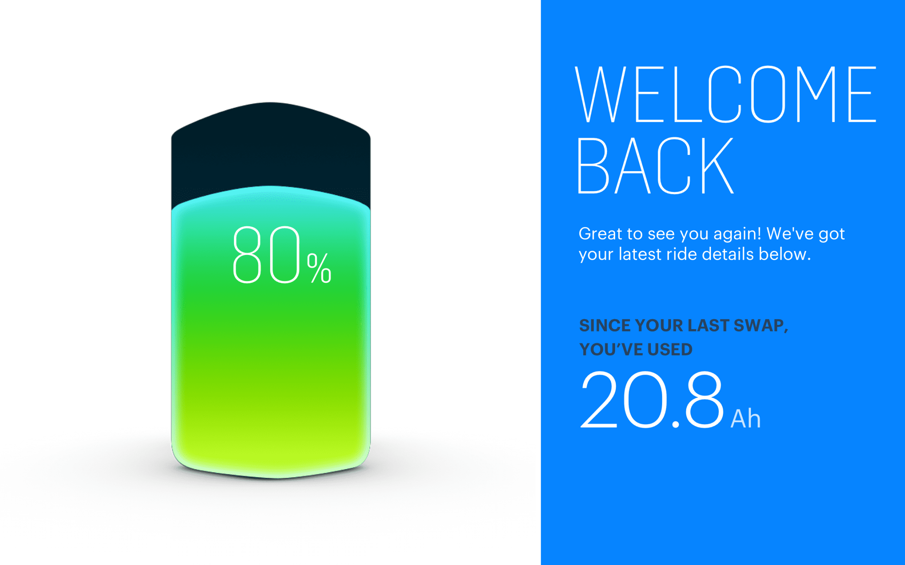
Project 1
Modular
The blue area on the right above is GoStation's commonly used information display template. In the past, GoStation's interface design focused on the visual balance of each language, so even if the layout looks similar, the spacing and font size will be slightly different, and there is no modularization. We will see the difference more clearly through the picture below.
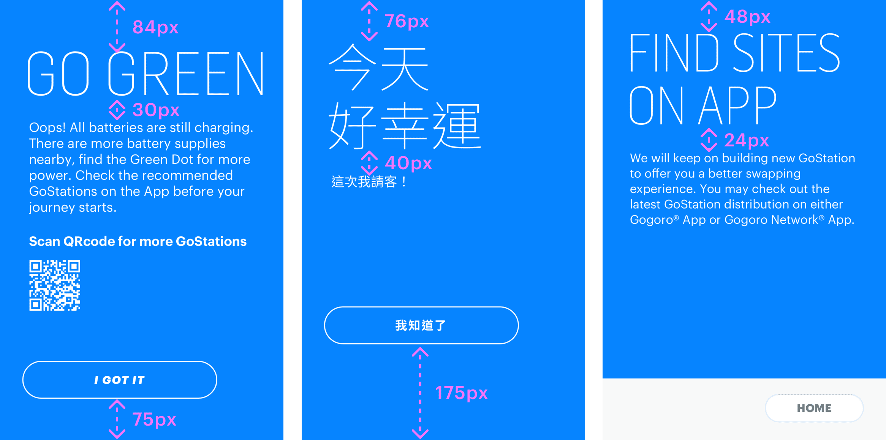
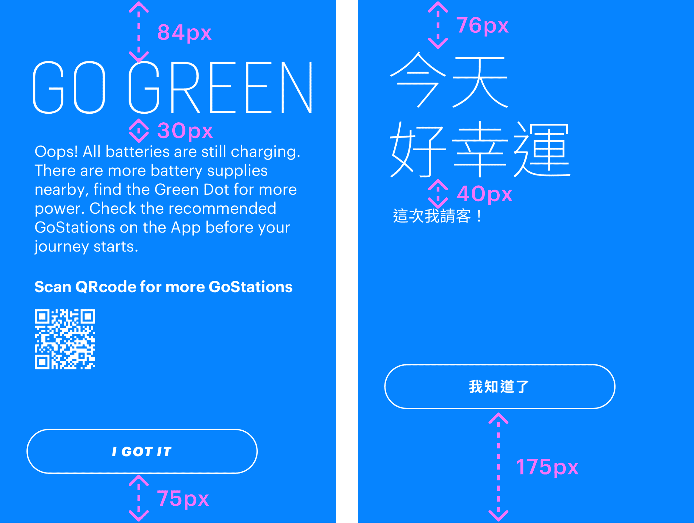
Challenge
From the pictures above, we can see that there are various spacing just due to the different languages and blocks. Although you can understand why "fine-tuning" is needed based on each situation, when it comes to extending multi-language situations, the maintenance cost is unimaginable.
In addition to spacing, the integration of fonts, font sizes, line-height, etc. in different languages also needs to be carefully considered. After all, these pages are already familiar to current users.
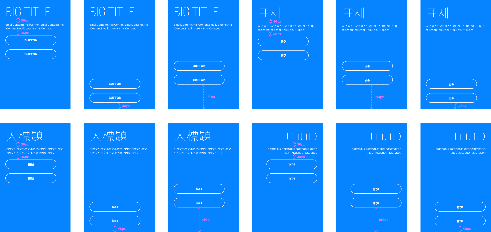
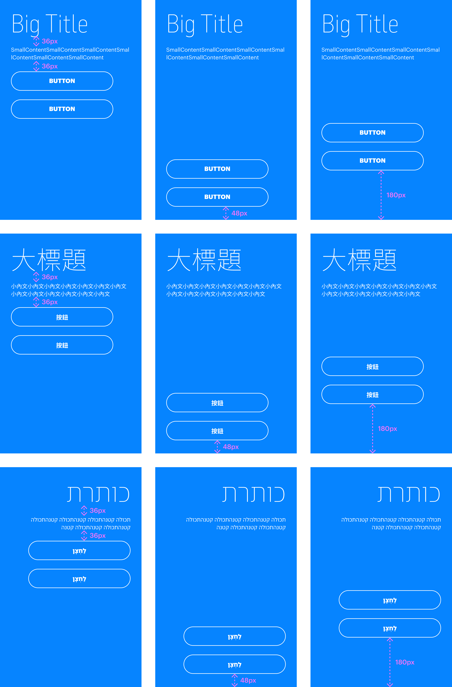
Integration
I consolidated the three most commonly used layouts from the current various pages, namely "fixed spacing", "button fixed bottom" and "button fixed center". The layout can then be selected based on the amount of content. In addition to Chinese and English languages, I also considered the reading order and layout of other languages.
As to fonts, in addition to the Gogoro brand fonts, other languages use the Noto Sans series with modular layouts to extend all required pages.
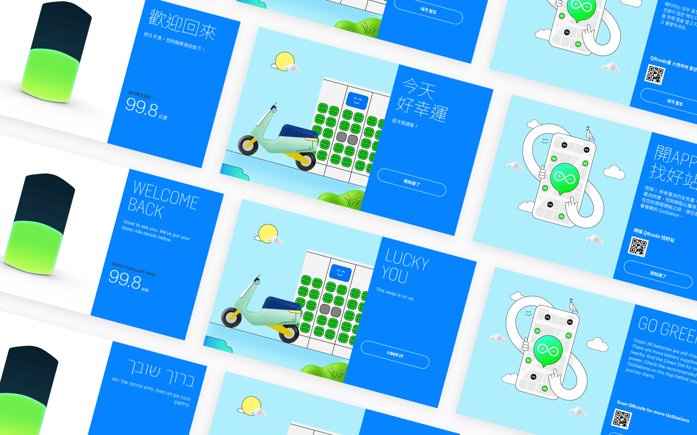
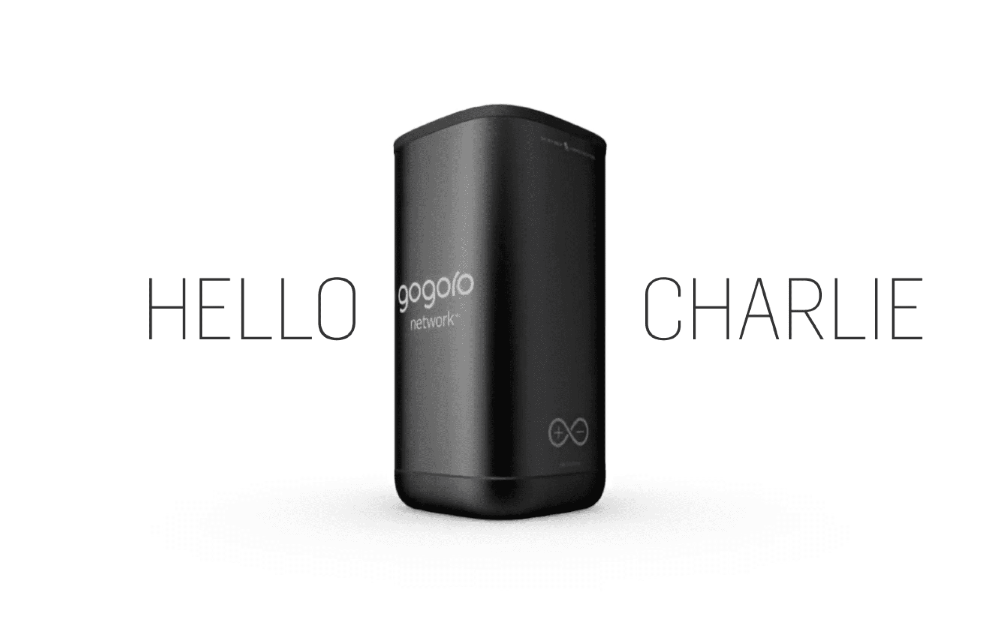
Project 2
Welcome Revamp
When swapping batteries, Hello Charlie is a welcome page that provides a very good user experience. However, it is easy to see that the space for "Charlie" on the right side of this page is very limited. If the user's name is longer, the screen will be crowded and unbalanced. Besides, Gogoro planned to support more languages in the future, so the current layout needs to be adjusted in a more flexible direction.
The current swapping animation will be slightly different depending on the number of batteries in the electric scooter. Let’s take a look at the difference between 1 battery and 2 batteries.
Challenge
Since the battery swapping process is all connected by animation videos, Hello Charlie is also a part of the process, and the animation scenarios of single battery and double battery must be considered together.
Revamp Concept
In the animations of single and double batteries, you can find that after the battery drops to the middle and displays Hello Charlie, it will "move to the left" and then shows the battery usage calculation. Therefore, we can use the space freed up on the right after moving left.
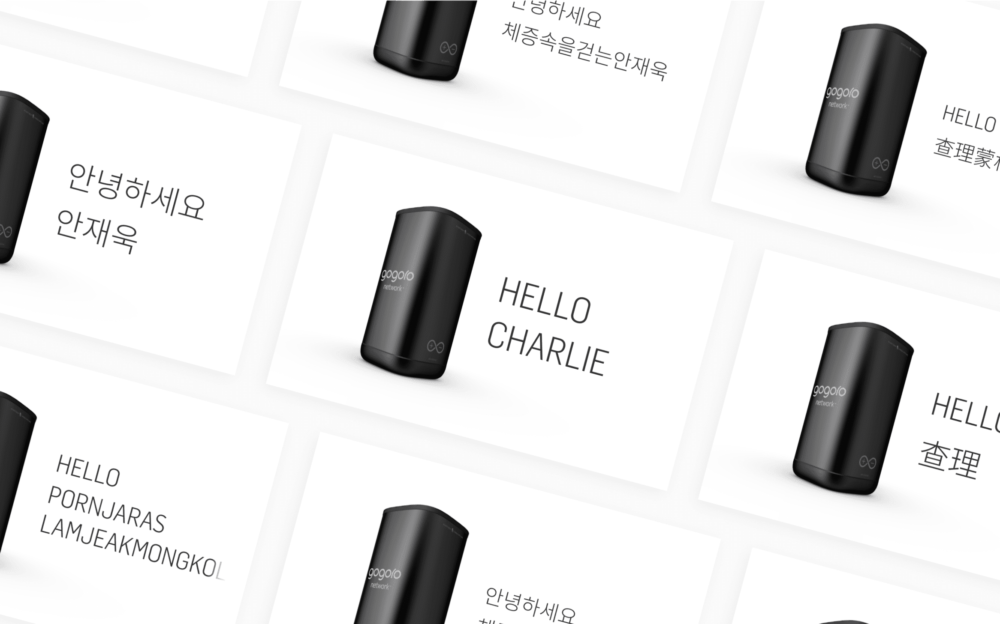
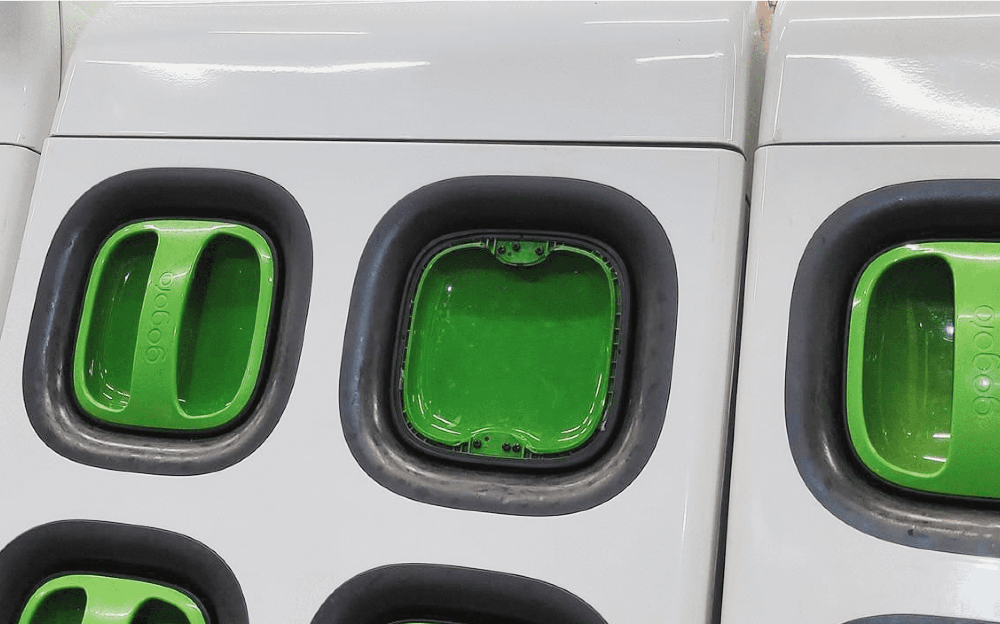
Project 3
Battery Issue Reporting
In the past, GoStation did not have a proper problem reporting mechanism. As a result, users had to call customer service when encountering battery abnormal issues, such as a broken battery handle. The user experience in abnormal situations was very unfriendly. In response to this situation, we began to plan a battery reporting mechanism and GoStation environmental report mechanism.
Challenge
Although the advantage of the problem reporting mechanism is that it can reduce customer-service call volume, leave resources to more urgent users, and also reduce the cost of customer service. However, once there is a lack of human verification, false reports become a risk. Therefore, how to provide a friendly feedback experience while reducing false report is a big challenge.
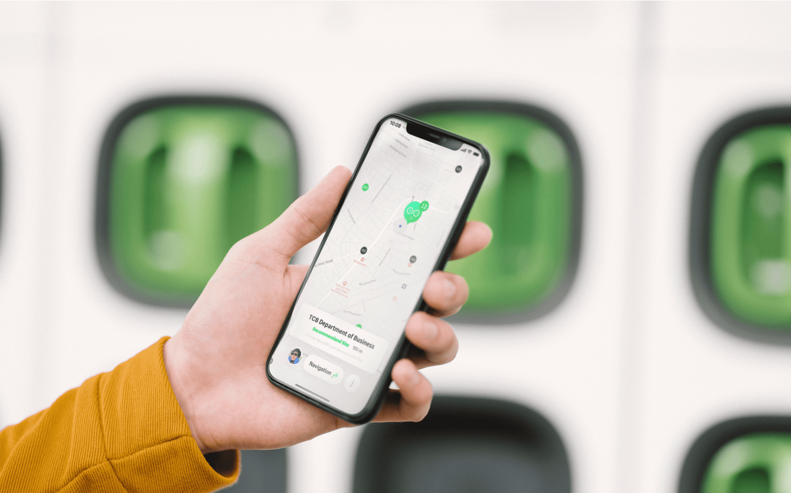
Identification
There are many ways to reduce false report. After internal discussions, the decision was made to take "identity authentication" as the primary consideration. In other words, whether battery abnormal report or GoStation environment report, the user's identity must be verified before proceeding.
Considering that system can identify users after they insert the battery into GoStation, we plan the trigger point of the "report mechanism" in the battery swap process.
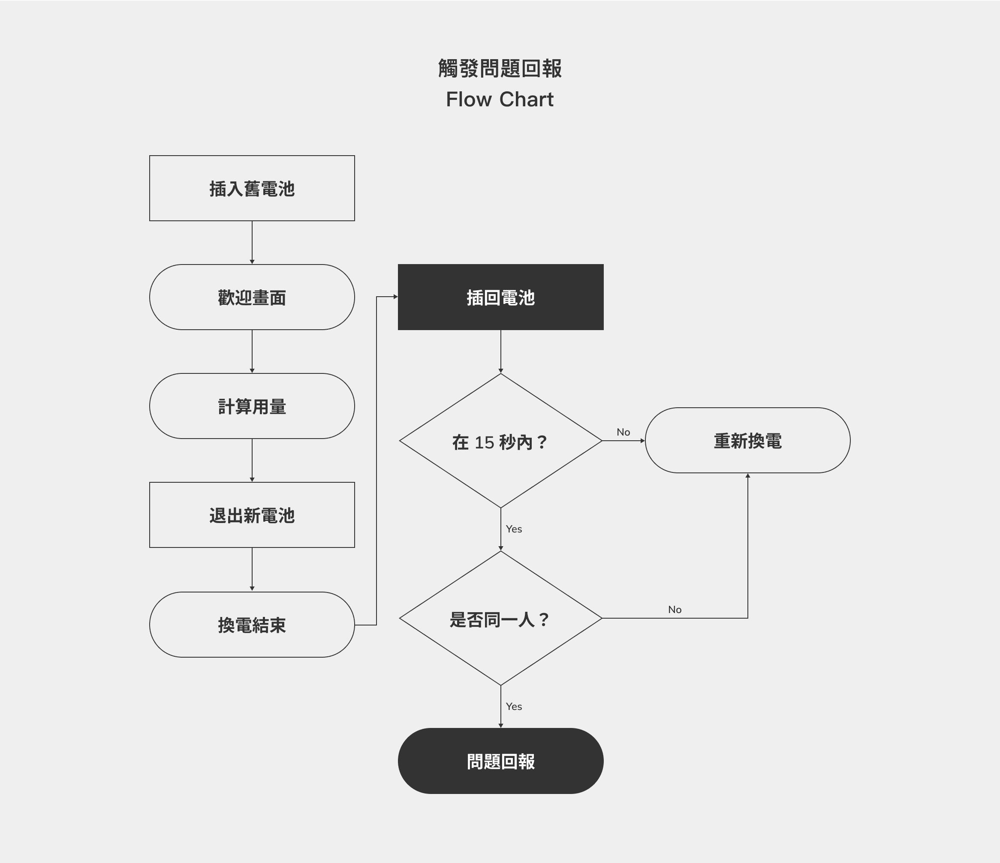
Assumption
In order not to affect normal swapping experience, we plan the trigger point of report mechanism to be within 15 seconds after the completion of the battery swap, and boldly assumed that the user "will push back the battery into GoStation when receiving an abnormal one"
Besides abnormal battery, we also need to plan the reporting process for the GoStation environment. For the consideration of identity authentication, we planned the same triggering point after internal discussions.
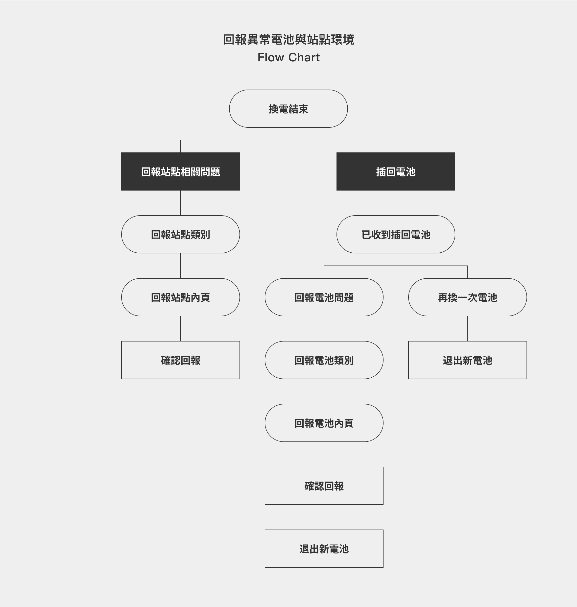
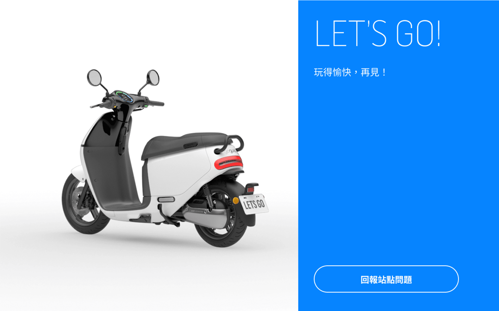
Suspicion
From the perspective of user experience, it is difficult to understand the reason for raising identity authentication to the highest standard in order to reduce false report. However, from the company's perspective, after an abnormal battery is reported, the system will not only lock the battery, but also notify operation team to verify and recycle it. This means that the available batteries will decrease and the company's costs will increase.
Although the original design intention was to reduce the number of customer service calls, before the function was launched, no one could guarantee that the cost of false report would be less than the resource cost of customer service.
However, there are many concerns about the reporting process, such as:
How do users know there is a report mechanism in the first place?
Users can only report the received battery? How about other batteries?
Is the trigger point for abnormal battery report too obscure? Will it be affected by the trigger point of GoStation environmental report?
Why users have to swap battery to trigger the GoStation environmental report?
Usability Testing
After discussing with the PM, we all agree that these doubts may affect the effectiveness of reporting, so we arranged usability testing to verify. The main testing goals are as follows:
Can users intuitively figure out how to trigger the reporting process?
Can the reporting process be successfully completed?
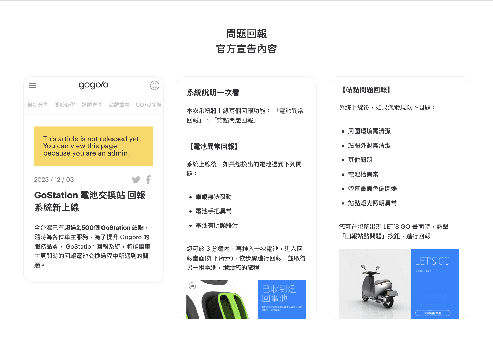
Persona
When we select internal testers, our only consideration is that they must be Gogoro scooter owners, so that we can simulate the actual battery swapping situation.
In order to consider reality, we distinguish two groups of testers based on whether they have read the "official announcement content". After all, users might try new functions after they hearing about them, plus, the trigger point of battery report is relatively obscure. In this case, whether the users have read the official news may affect the actual operating experience.
Scenarios
The test scenario mainly allows users to simulate the daily battery swapping process, we have set the abnormal conditions (as shown below). It is difficult to simulate natural situations in a dirty GoStation. After all, everyone has different definitions of dirty, so we briefed testers verbally.
Abnormal 1: Encounter a battery with broken handle after receiving batteries.
Abnormal 2: Feel the GoStation is very dirty and want to report it.
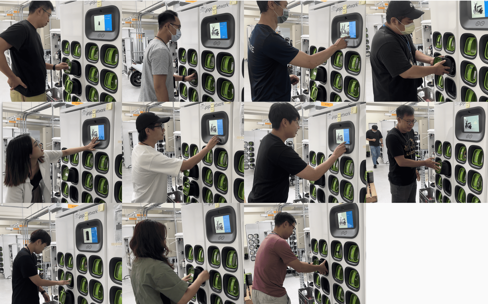
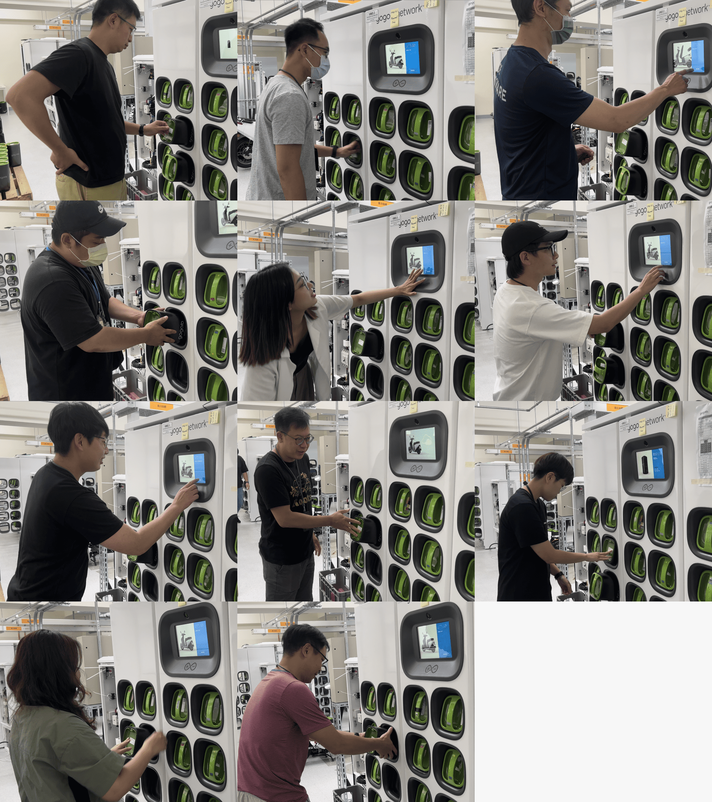
Testing
We recruited 12 Gogoro internal testers and divide them into two groups. One person was absent for some reason during the actual test.
Detailed tasks are planned based on abnormal situations. Task scores are calculated based on completion within the expected time. Detours or signs of frustration reduced the score.
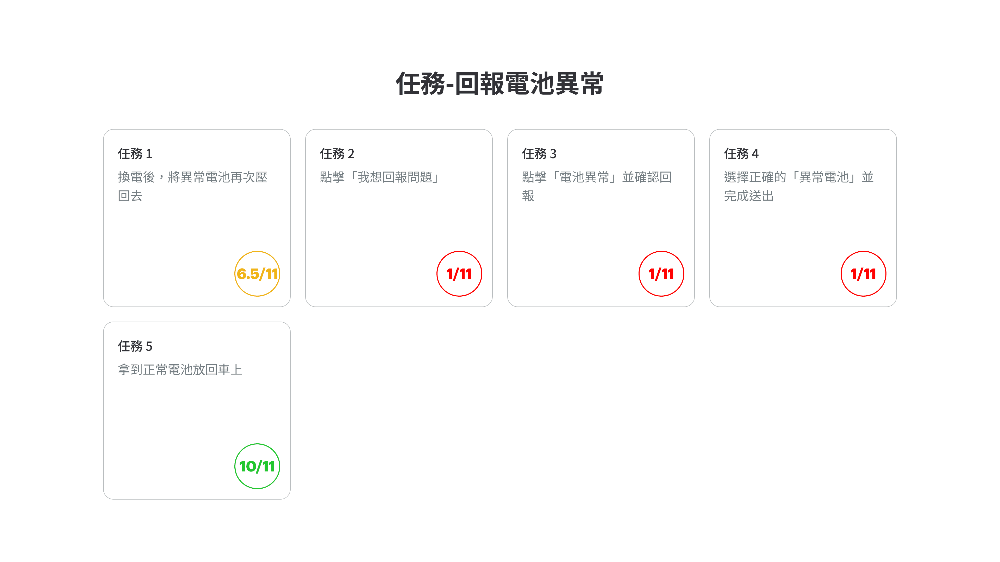
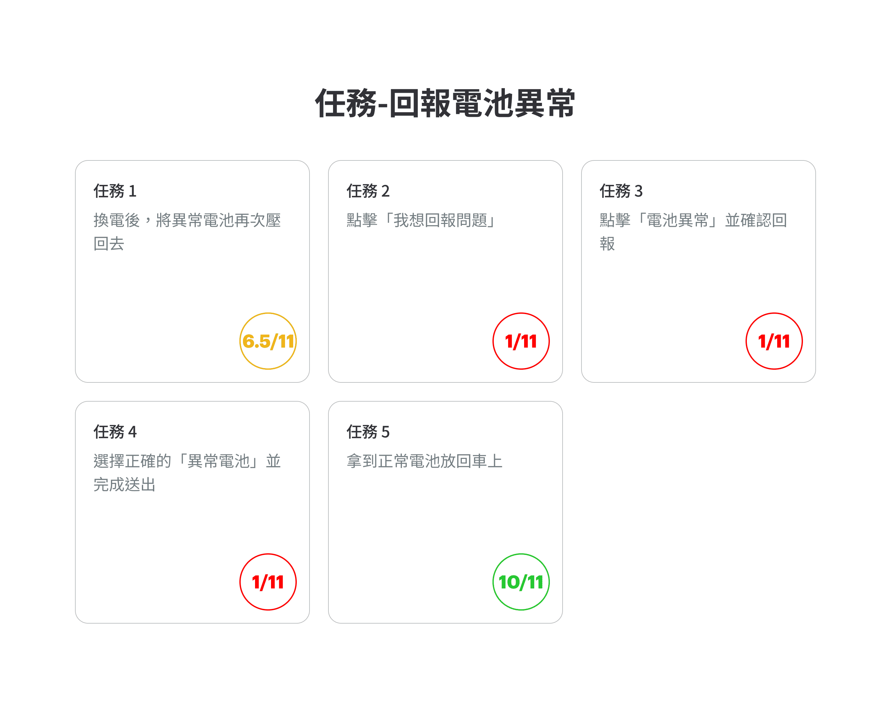
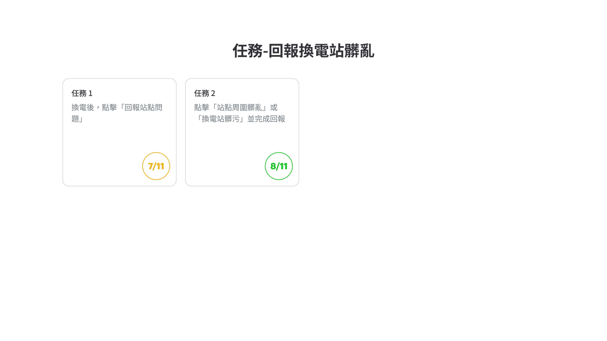
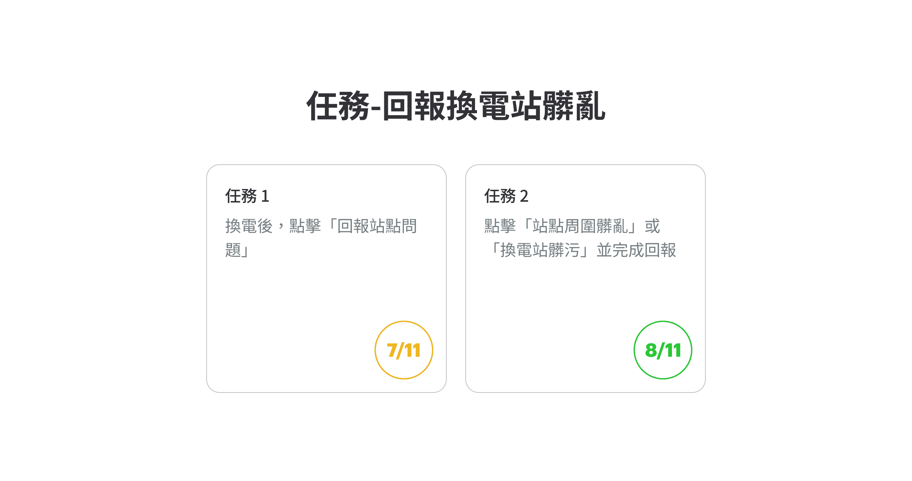
Result
Abnormal Battery Report
After receiving abnormal battery, 5 people intuitively push back to the GoStation. The other 5 were drawn into other flows and went to other processes. 1 person gave up and wanted to call customer service. Even after entering the report process, most choose to "swapping it again" to get the battery quickly, but no matter what, as long as they can consciously push back to the GoStation, 10 people will eventually get a new battery.
GoStation Environmental Report
Five people were able to discover "GoStation Report Button" during the swapping process. The other 4 people needed to be clearly guided to perform the swapping process first, and the other 2 gave up reporting.
Insights
After the test, in addition to verifying some of the original doubts, we also found that we ignored very important user behavior patterns when designing the process. The following are the key insights observed after the test:
Even testers who had read the official announcement, it was still not helpful for actual operation, because they won't take it seriously before swapping batteries.
It was reasonable for the bold assumption that "when receiving an abnormal battery, users will intuitively push the battery back." The test subjects all had this operating tendency.
Even if some users want to push back the abnormal battery, they will be unconsciously attracted to click the "GoStation Environmental Report" button when they see it, resulting in false report.
Most people tend to make sure that they have received a normal battery before considering reporting the abnormal one.
Summary
As the initial test target, it was learned during the test that more than 70% of the subjects tended to push back the abnormal battery, so that they could enter the abnormal battery report process and finally get a new battery. Compared to the original situation that users could only call customer and wait, the testing result is already a significant improvement.
Although we have observed that most users care about ensuring that they get normal batteries and may not want to help report abnormal batteries, the result is still positive for us, at least users can receive a new battery without waiting.
Abnormal report can indeed effectively reduce customer service burden. Although human nature may not necessarily assist in reporting, it is an acceptable result.
But...
The misleading of GoStation report that we were most worried about at the beginning did occur, and the probability is not low, and it does affect the entry point for battery abnormal report. The misleading of "GoStation Environmental Report" is the problem of information architecture and process planning. After we shared the test results to internal members, they no longer insisted on identity authentication for GoStation report, and instead arrange this process under the support service structure.
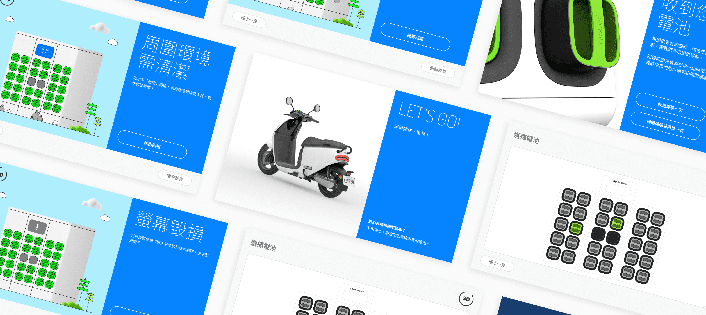
Learnings
This was the first time I had designed a user interface other than a website or app. At the beginning, I started by thinking in the concept of design system to help optimizing development efficiency and reduces maintenance costs.
However, when planning abnormal report and arranging usability testing, I deeply felt the importance of how the user's operating habits and mental models affect this screen. These experiences let me know don't rely too much on what I believe in when designing interfaces. Appropriate observation and research on habits and behaviors is still necessary.
This experience of changing the team's thinking through usability testing also taught me the value of the testing and how to find consensus when facing cooperation differences later.